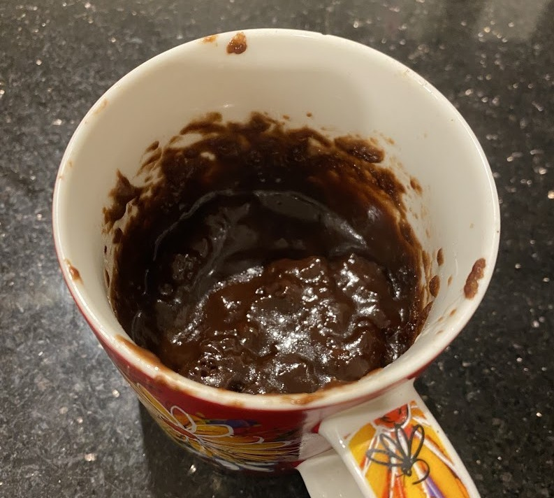

Choc Self Saucing Pudding (Mug)
Not as nice as the baked one, but much faster to make.

3 tbspPlain White Flour2 tbspSugar1 1/2 tbspCocoa Powder1/2 tspBaking Powder
Mix Plain White Flour Sugar Cocoa Powder Baking Powder together in a large mug
3 tbspMilksome2 tbsp Oil (or melted butter)some1/4 tsp Vanilla Essence
Add Milk 2 tbsp Oil (or melted butter) 1/4 tsp Vanilla Essence and mix in
1 tbspBrown Sugar1 tspCocoa Powder
Sprinkle Brown Sugar and Cocoa Powder over the top
3 tbspBoiling Water
Gently add Boiling Water on top to disolve sauce
Cook in the microwave for 1 1/2 minutes